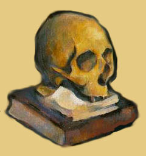

The Birth of Detachment
Moving Mountains
Whether To Be or Not
Voyeur or Voyee
Never Far from the Original Emergence

______________________________________________________
Say What?
A Postmodern meditation resulting from a reading of
Meyer Schapiro's remarks
on Cezanne's work
in his book, "Modern Art" with imagined diary entries
penned by Cezanne and some of his contemporaries
and adaptations of scans by Mark Harden.
Using a Macintosh? View only with Netscape.
©1999 Jennifer Ley